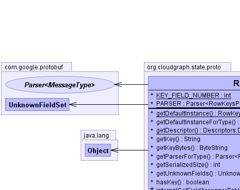
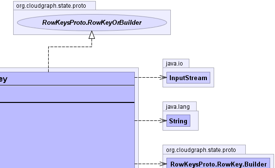
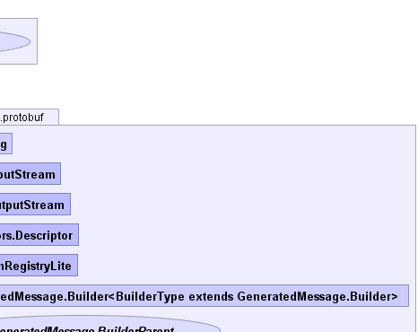
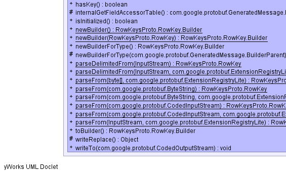
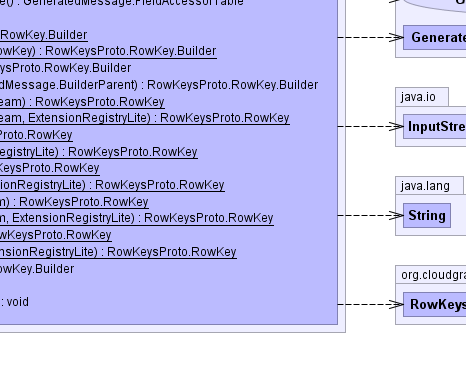
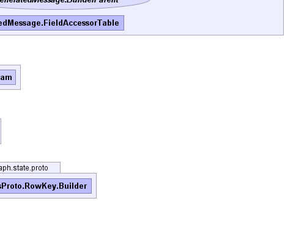

public static final class RowKeysProto.RowKey extends com.google.protobuf.GeneratedMessage implements RowKeysProto.RowKeyOrBuilder
org.cloudgraph.state.proto.RowKey|  |  |  |
|  |  |  |
| Modifier and Type | Class and Description |
|---|---|
static class |
RowKeysProto.RowKey.Builder
Protobuf type
org.cloudgraph.state.proto.RowKey |
com.google.protobuf.GeneratedMessage.BuilderParent, com.google.protobuf.GeneratedMessage.ExtendableBuilder<MessageType extends com.google.protobuf.GeneratedMessage.ExtendableMessage,BuilderType extends com.google.protobuf.GeneratedMessage.ExtendableBuilder>, com.google.protobuf.GeneratedMessage.ExtendableMessage<MessageType extends com.google.protobuf.GeneratedMessage.ExtendableMessage>, com.google.protobuf.GeneratedMessage.ExtendableMessageOrBuilder<MessageType extends com.google.protobuf.GeneratedMessage.ExtendableMessage>, com.google.protobuf.GeneratedMessage.FieldAccessorTable, com.google.protobuf.GeneratedMessage.GeneratedExtension<ContainingType extends com.google.protobuf.Message,Type>| Modifier and Type | Field and Description |
|---|---|
static int |
KEY_FIELD_NUMBER |
static com.google.protobuf.Parser<RowKeysProto.RowKey> |
PARSER |
| Modifier and Type | Method and Description |
|---|---|
static RowKeysProto.RowKey |
getDefaultInstance() |
RowKeysProto.RowKey |
getDefaultInstanceForType() |
static com.google.protobuf.Descriptors.Descriptor |
getDescriptor() |
java.lang.String |
getKey()
required string key = 1; |
com.google.protobuf.ByteString |
getKeyBytes()
required string key = 1; |
com.google.protobuf.Parser<RowKeysProto.RowKey> |
getParserForType() |
int |
getSerializedSize() |
com.google.protobuf.UnknownFieldSet |
getUnknownFields() |
boolean |
hasKey()
required string key = 1; |
protected com.google.protobuf.GeneratedMessage.FieldAccessorTable |
internalGetFieldAccessorTable() |
boolean |
isInitialized() |
static RowKeysProto.RowKey.Builder |
newBuilder() |
static RowKeysProto.RowKey.Builder |
newBuilder(RowKeysProto.RowKey prototype) |
RowKeysProto.RowKey.Builder |
newBuilderForType() |
protected RowKeysProto.RowKey.Builder |
newBuilderForType(com.google.protobuf.GeneratedMessage.BuilderParent parent) |
static RowKeysProto.RowKey |
parseDelimitedFrom(java.io.InputStream input) |
static RowKeysProto.RowKey |
parseDelimitedFrom(java.io.InputStream input,
com.google.protobuf.ExtensionRegistryLite extensionRegistry) |
static RowKeysProto.RowKey |
parseFrom(byte[] data) |
static RowKeysProto.RowKey |
parseFrom(byte[] data,
com.google.protobuf.ExtensionRegistryLite extensionRegistry) |
static RowKeysProto.RowKey |
parseFrom(com.google.protobuf.ByteString data) |
static RowKeysProto.RowKey |
parseFrom(com.google.protobuf.ByteString data,
com.google.protobuf.ExtensionRegistryLite extensionRegistry) |
static RowKeysProto.RowKey |
parseFrom(com.google.protobuf.CodedInputStream input) |
static RowKeysProto.RowKey |
parseFrom(com.google.protobuf.CodedInputStream input,
com.google.protobuf.ExtensionRegistryLite extensionRegistry) |
static RowKeysProto.RowKey |
parseFrom(java.io.InputStream input) |
static RowKeysProto.RowKey |
parseFrom(java.io.InputStream input,
com.google.protobuf.ExtensionRegistryLite extensionRegistry) |
RowKeysProto.RowKey.Builder |
toBuilder() |
protected java.lang.Object |
writeReplace() |
void |
writeTo(com.google.protobuf.CodedOutputStream output) |
getAllFields, getDescriptorForType, getField, getRepeatedField, getRepeatedFieldCount, hasField, makeExtensionsImmutable, newFileScopedGeneratedExtension, newMessageScopedGeneratedExtension, parseUnknownFieldequals, findInitializationErrors, getInitializationErrorString, hashBoolean, hashCode, hashEnum, hashEnumList, hashFields, hashLong, toStringtoByteArray, toByteString, writeDelimitedTo, writeToclone, finalize, getClass, notify, notifyAll, wait, wait, waitpublic static com.google.protobuf.Parser<RowKeysProto.RowKey> PARSER
public static final int KEY_FIELD_NUMBER
public static RowKeysProto.RowKey getDefaultInstance()
public RowKeysProto.RowKey getDefaultInstanceForType()
getDefaultInstanceForType in interface com.google.protobuf.MessageLiteOrBuildergetDefaultInstanceForType in interface com.google.protobuf.MessageOrBuilderpublic final com.google.protobuf.UnknownFieldSet getUnknownFields()
getUnknownFields in interface com.google.protobuf.MessageOrBuildergetUnknownFields in class com.google.protobuf.GeneratedMessagepublic static final com.google.protobuf.Descriptors.Descriptor getDescriptor()
protected com.google.protobuf.GeneratedMessage.FieldAccessorTable internalGetFieldAccessorTable()
internalGetFieldAccessorTable in class com.google.protobuf.GeneratedMessagepublic com.google.protobuf.Parser<RowKeysProto.RowKey> getParserForType()
getParserForType in interface com.google.protobuf.MessagegetParserForType in interface com.google.protobuf.MessageLitegetParserForType in class com.google.protobuf.GeneratedMessagepublic boolean hasKey()
required string key = 1;hasKey in interface RowKeysProto.RowKeyOrBuilderpublic java.lang.String getKey()
required string key = 1;getKey in interface RowKeysProto.RowKeyOrBuilderpublic com.google.protobuf.ByteString getKeyBytes()
required string key = 1;getKeyBytes in interface RowKeysProto.RowKeyOrBuilderpublic final boolean isInitialized()
isInitialized in interface com.google.protobuf.MessageLiteOrBuilderisInitialized in class com.google.protobuf.GeneratedMessagepublic void writeTo(com.google.protobuf.CodedOutputStream output)
throws java.io.IOException
writeTo in interface com.google.protobuf.MessageLitewriteTo in class com.google.protobuf.AbstractMessagejava.io.IOExceptionpublic int getSerializedSize()
getSerializedSize in interface com.google.protobuf.MessageLitegetSerializedSize in class com.google.protobuf.AbstractMessageprotected java.lang.Object writeReplace()
throws java.io.ObjectStreamException
writeReplace in class com.google.protobuf.GeneratedMessagejava.io.ObjectStreamExceptionpublic static RowKeysProto.RowKey parseFrom(com.google.protobuf.ByteString data) throws com.google.protobuf.InvalidProtocolBufferException
com.google.protobuf.InvalidProtocolBufferExceptionpublic static RowKeysProto.RowKey parseFrom(com.google.protobuf.ByteString data, com.google.protobuf.ExtensionRegistryLite extensionRegistry) throws com.google.protobuf.InvalidProtocolBufferException
com.google.protobuf.InvalidProtocolBufferExceptionpublic static RowKeysProto.RowKey parseFrom(byte[] data) throws com.google.protobuf.InvalidProtocolBufferException
com.google.protobuf.InvalidProtocolBufferExceptionpublic static RowKeysProto.RowKey parseFrom(byte[] data, com.google.protobuf.ExtensionRegistryLite extensionRegistry) throws com.google.protobuf.InvalidProtocolBufferException
com.google.protobuf.InvalidProtocolBufferExceptionpublic static RowKeysProto.RowKey parseFrom(java.io.InputStream input) throws java.io.IOException
java.io.IOExceptionpublic static RowKeysProto.RowKey parseFrom(java.io.InputStream input, com.google.protobuf.ExtensionRegistryLite extensionRegistry) throws java.io.IOException
java.io.IOExceptionpublic static RowKeysProto.RowKey parseDelimitedFrom(java.io.InputStream input) throws java.io.IOException
java.io.IOExceptionpublic static RowKeysProto.RowKey parseDelimitedFrom(java.io.InputStream input, com.google.protobuf.ExtensionRegistryLite extensionRegistry) throws java.io.IOException
java.io.IOExceptionpublic static RowKeysProto.RowKey parseFrom(com.google.protobuf.CodedInputStream input) throws java.io.IOException
java.io.IOExceptionpublic static RowKeysProto.RowKey parseFrom(com.google.protobuf.CodedInputStream input, com.google.protobuf.ExtensionRegistryLite extensionRegistry) throws java.io.IOException
java.io.IOExceptionpublic static RowKeysProto.RowKey.Builder newBuilder()
public RowKeysProto.RowKey.Builder newBuilderForType()
newBuilderForType in interface com.google.protobuf.MessagenewBuilderForType in interface com.google.protobuf.MessageLitepublic static RowKeysProto.RowKey.Builder newBuilder(RowKeysProto.RowKey prototype)
public RowKeysProto.RowKey.Builder toBuilder()
toBuilder in interface com.google.protobuf.MessagetoBuilder in interface com.google.protobuf.MessageLiteprotected RowKeysProto.RowKey.Builder newBuilderForType(com.google.protobuf.GeneratedMessage.BuilderParent parent)
newBuilderForType in class com.google.protobuf.GeneratedMessageCloudGraph® is a registered trademark of TerraMeta Software, Inc. Copyright © 2014 - All Rights Reserved.